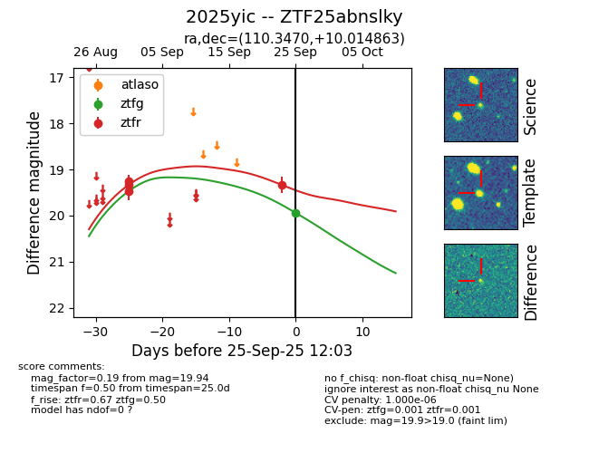
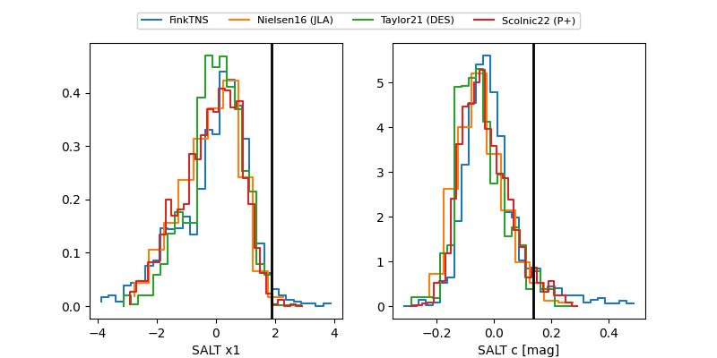

FINK: ZTF25abnslky
Lasair: ZTF25abnslky
ALeRCE: ZTF25abnslky
TNS: 2025yic
YSE: 2025yic
ZTF25abnslky (ztf,fink)
2025yic (tns,yse)
equatorial (ra, dec) = (110.3470,+10.01486)
galactic (l, b) = (207.3014,+11.15736)


last ztfg=19.94, ztfr=19.33
1 ztfg, 4 ztfr detections